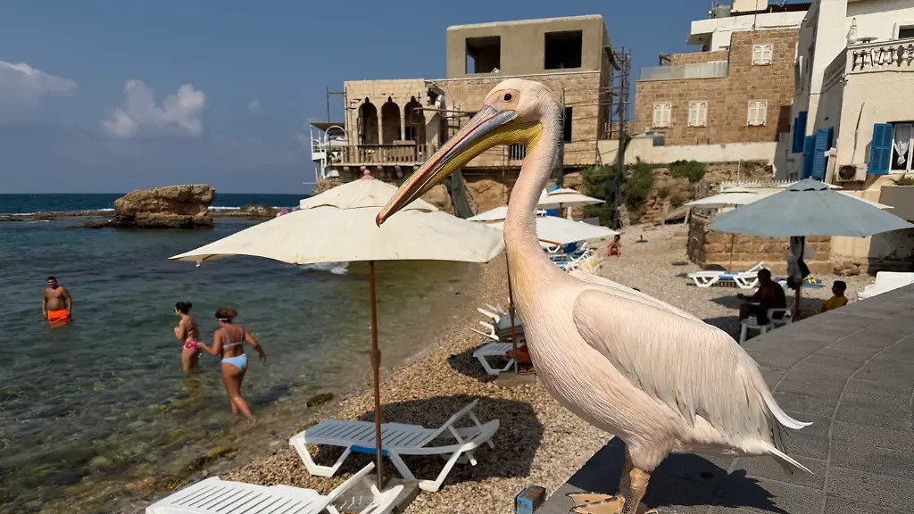
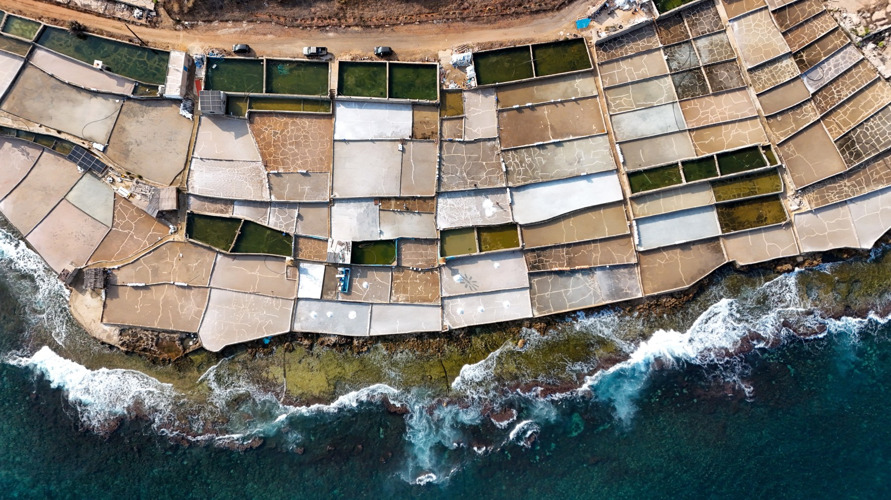
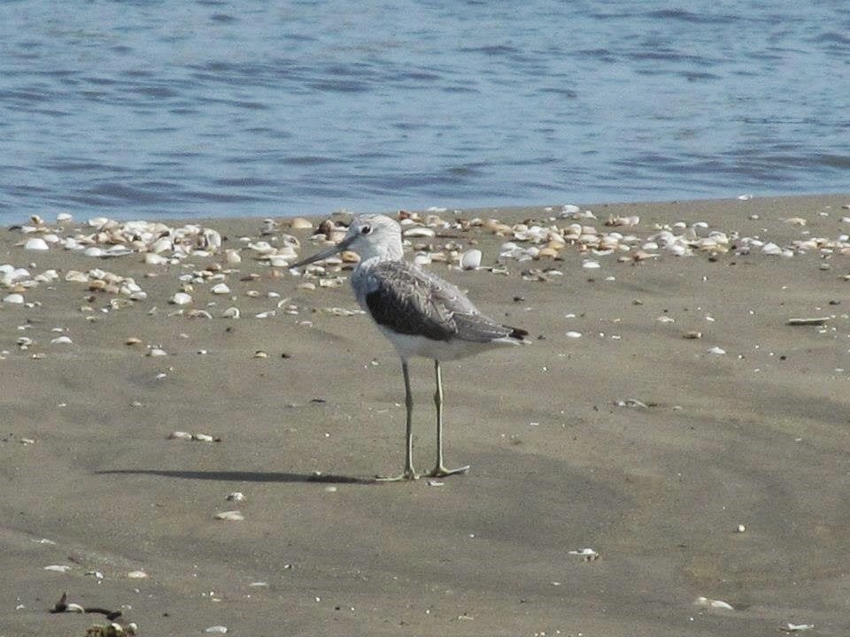
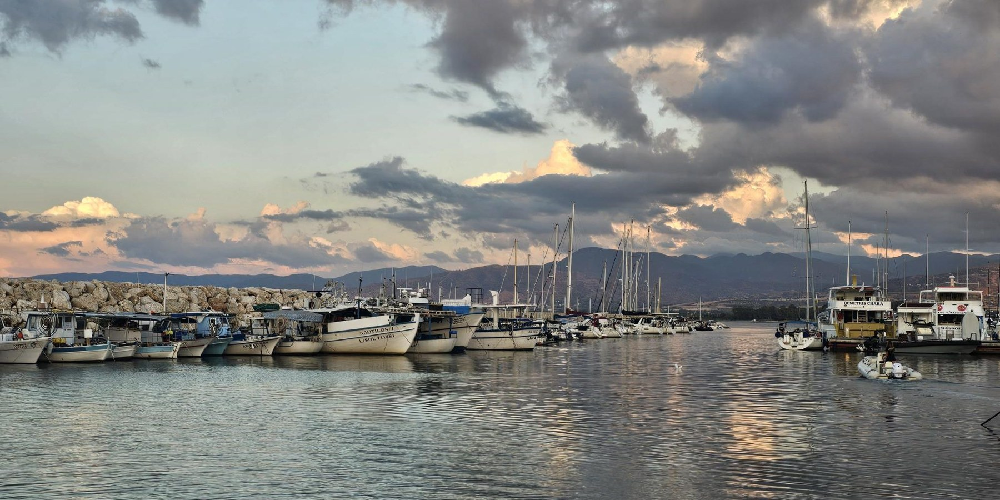

Amira Rajab / dpa
Le triangle Liban–Chypre–Égypte : estuaires, salines, lacs et ports dans la protection des habitats des oiseaux.
En 2026, les rapports sur la gestion du bassin du Damour au Liban, une nouvelle étude sur le lac Manzala en Égypte et le débat sur l’agrandissement du port de Latchi à Chypre relancent une même question : où les oiseaux se reposent-ils lorsque le littoral change ? Au bord de l’eau, ils ont besoin d’un estuaire encore alimenté par le fleuve, d’une rive peu profonde riche en nourriture, de roseaux protecteurs ou d’un rocher tranquille après une plongée. Ces éléments font la valeur d’un habitat et méritent de figurer dans les projets d’aménagement dès leur conception.
Liban | De l’estuaire du Damour aux salines d’Anfeh

EPA / The National
En 2026, le plan de gestion intégrée du Damour remet au premier plan la relation entre le fleuve et le littoral. Les rapports révèlent les pressions sur la région : environ 200,7 hectares de terres agricoles ont été urbanisés entre 2014 et 2024 dans le périmètre d’étude du bassin, auxquels s’ajoutent les prélèvements d’eau, la pollution et les constructions sur les berges.
Ces pressions prennent une importance particulière à l’estuaire et dans ses environs, où l’eau douce rejoint la mer et où le cours d’eau se relie aux terres agricoles et à la végétation côtière. Cette zone constitue un habitat pour les oiseaux migrateurs au Liban. Les relevés du cours inférieur du Damour ont documenté des espèces migratrices et sédentaires, notamment le Pélican blanc et la Grue cendrée. Protéger l’estuaire signifie donc préserver un espace utilisé par les oiseaux ainsi que ses liens avec l’eau et la végétation environnante.
Les rapports récents font de l’arrivée d’eau à l’estuaire une priorité de gestion, aux côtés de la restauration des berges et de l’encadrement de l’usage des sols. La protection du littoral dépend de ce qui se passe en amont : les prélèvements, la pollution et les empiétements ont des conséquences tout au long du fleuve, jusqu’à la mer.
Sur la côte nord, les salines d’Anfeh illustrent une autre facette de cette relation. Entre la mer et la roche s’étendent des bassins peu profonds façonnés par la récolte du sel, dans un paysage qui associe travail, patrimoine et nature. Les sources documentent leur rôle de sites de repos et d’alimentation pour les oiseaux migrateurs, tandis que certains bassins abandonnés sont devenus des refuges. Des espaces qui semblent inexploités conservent ainsi une fonction vivante sur le parcours des oiseaux.
Les salines subissent la pression des changements d’usage du littoral et du développement touristique. Leur protection dépasse donc la sauvegarde d’un métier traditionnel. Préserver les bassins, leur lien avec la mer et leur caractère ouvert permettrait de maintenir la production de sel tout en conservant des sites d’alimentation et de repos pour les oiseaux.
Sur la plage de Batroun, la célèbre « Bajou3a » donne un visage familier à la relation entre les oiseaux et le littoral. Son image au bord de la mer rapproche la question du public : où les oiseaux trouvent-ils repos et nourriture, et comment préserver ces espaces lorsque le rivage change ?
Égypte | Manzala : davantage d’eau libre… des habitats différents

اليوم السابع
Une étude scientifique publiée en 2026 pose une question précise au sujet du lac Manzala : comment la vie des oiseaux change-t-elle lorsque les eaux libres s’étendent au détriment des roseaux et des bordures peu profondes ?
L’étude a comparé vingt sites de la réserve d’Ashtoum El Gamil, dans la partie nord-est du lac, avant et après le dragage et l’enlèvement de la végétation. Elle a constaté une diminution du couvert végétal, de la diversité et de l’abondance des oiseaux dans la zone étudiée, avec des réponses différentes selon les groupes et les habitats qu’ils utilisent.
Un limicole cherche sa nourriture dans les eaux peu profondes et la vase, tandis que d’autres oiseaux profitent des eaux libres. Lorsque la profondeur change ou que la végétation disparaît, les possibilités offertes à chaque groupe changent aussi. Le lac peut ainsi paraître plus vaste et plus ouvert tout en perdant certains habitats qui font sa diversité.
L’étude recommande de permettre le retour des roseaux et de restaurer des zones peu profondes et vaseuses sur les bordures. Ces recommandations relient la réhabilitation du lac aux besoins des oiseaux : des eaux libres pour plonger et nager, de la végétation pour s’abriter et nicher, et des rives pour se nourrir et se reposer.
Cette diversité est particulièrement importante à Ashtoum El Gamil, où le milieu lacustre rejoint la Méditerranée. Les différences entre les eaux, la végétation et les bordures créent une succession d’habitats que les oiseaux utilisent de diverses manières.
La réussite d’une réhabilitation se mesure aussi à la diversité conservée. Assainir l’eau et améliorer sa circulation peuvent aller de pair avec la protection des roseaux, des zones peu profondes et des îles. Lorsque ces éléments demeurent, le lac peut accueillir des oiseaux aux besoins variés et conserver sa fonction de milieu côtier vivant.
Chypre | Latchi : le port sur la carte des oiseaux

BirdLife Cyprus
En octobre 2026, BirdLife Cyprus a relancé le débat sur les limites de l’aménagement avec le projet d’agrandissement du port de Latchi, au nord-ouest de l’île. Selon l’association, la capacité d’accueil des bateaux de plaisance passerait de 200 à 384 dans la baie de Chrysochous, entourée de zones protégées et abritant des oiseaux marins, des tortues et le Phoque moine de Méditerranée, ainsi que des herbiers de posidonie.
La nouveauté du débat vient de ce que révèlent les déplacements des oiseaux. Selon l’association, les données du projet Pandoteira montrent une utilisation régulière de la côte d’Akamas et de la baie par la sous-espèce méditerranéenne du Cormoran huppé, les jeunes visitant fréquemment les environs du port. Un espace d’amarrage et de navigation sur un plan d’ingénierie apparaît, sur la carte de l’oiseau, comme un lieu d’alimentation et de repos.
Les dispositifs de suivi aident à comprendre cette relation : ils révèlent les déplacements après le départ du nid et les secteurs du littoral utilisés au fil de la journée. Le Cormoran huppé, qui niche sur les rochers et les îlots côtiers, a aussi besoin d’eaux où trouver sa nourriture et de lieux où se poser tranquillement après une plongée.
L’association met en garde contre l’augmentation du bruit, de l’éclairage, de la pollution et de la présence humaine avec la hausse du nombre de bateaux. Elle demande une évaluation des effets cumulés à l’échelle de la baie. Les habitats marins sont liés entre eux, et les déplacements des oiseaux dépassent les limites du projet tracées sur le papier.
L’intérêt du cas chypriote réside dans l’intégration des sites d’alimentation et de repos à la décision d’agrandissement et à ses conditions, en considérant le port dans son environnement. Connaître l’emplacement du nid ne suffit pas : la carte de protection doit englober la vie quotidienne de l’oiseau.
Que reste-t-il au bord de l’eau ?
Du Damour et d’Anfeh à Manzala et Latchi, les interventions et les oiseaux diffèrent, mais la question demeure : que préservons-nous pour eux lorsque le littoral change ? Un estuaire alimenté en eau, des rochers tranquilles, des roseaux et des rives peu profondes méritent de figurer dans les plans d’aménagement au même titre que les quais et les routes. Un littoral qui accueille la vie humaine peut aussi laisser aux oiseaux un lieu où se reposer.